{kind=link}
{kind=link}
{kind=link}
{kind=link}
{kind=link}
{kind=link}
广告游戏筛选：空结果
相同无匹配关键词，空结果弹层比较。
差异像素占比：0.0000%；平均 RGB 差异：0.00000

会员导出双端对比（六格式 × 全部/所选，共 12 组） · 导出模拟数据
会员隐藏列导出对比 · 隐藏列模拟数据（含零值和前导零账号）
提现与补贴本轮范围和待办 · 标签、工具栏、选择器原始对照 · 两页 16 种分页对照 · 广告 8 种分页对照
审核工具栏参考 · 本地 · 差异 · 分页参考 · 本地 · 差异
浏览器注入模拟数据，不写入业务数据库。以下为已有截图证据的汇总，非本次重新运行全套检查。
差异像素指任一 RGB 通道差值大于 10 的像素；占比使用整张截图面积，空白区域会稀释结果。该指标不能换算成功能完成率或全站还原率。
当前不能判定全站一比一或可以上线。尚需覆盖其余页面、弹窗、交互状态、权限、业务统计规则与上线检查。
已有会员导出证据：24 / 24 组一致（普通列与隐藏列，六种格式，各含全部及所选记录）。仅代表这些模拟数据与导出场景。
| 页面或状态 | 差异像素 | 比较范围 |
|---|---|---|
| 广告列表 | 0.4627% | 相同 3 条广告记录，折叠筛选；核对 20 个字段、五列双向排序、七类点击筛选和六格式导出。日历及选择器尺寸已对齐；分页和选择器另有局部对比，权限和完整统计语义仍待核验。 |
| 广告游戏筛选：首屏 | 0.0039% | 相同 12 个选项，首屏 10 个；核对下拉内容、尺寸和位置。 |
| 广告游戏筛选：末页 | 0.1107% | 同一组生成数据，键盘翻页显示剩余 2 项。 |
| 广告游戏筛选：空结果 | 0.0000% | 相同无匹配关键词，空结果弹层比较。 |
| 广告代理筛选：首屏 | 0.0020% | 相同 12 个选项；按参考取整规则校正右侧展开位置。 |
| 广告代理筛选：末页 | 0.1500% | 同一组生成数据，末页 2 项。 |
| 广告代理筛选：空结果 | 0.0000% | 相同无匹配关键词；局部截图，真实可见权限范围另行核验。 |
| 补贴列表 | 3.2656% | 相同 3 条补贴记录和图片，折叠筛选；核对四个单元格搜索请求。审核操作、权限与后台汇总语义仍未完整验证。 |
| 代理商筛选：下拉首屏 | 0.0187% | 相同 12 个生成代理商，首屏 10 个；仅下拉层截图，不验证账号可见范围。 |
| 代理商筛选：下拉末页 | 0.1107% | 键盘翻到第 2 页，核对剩余两个选项与分页栏。 |
| 代理商筛选：无匹配结果 | 0.0000% | 相同无匹配关键词，核对空结果面板。 |
| 游戏筛选：下拉首屏 | 5.6202% | 相同 12 个生成选项，首屏 10 个；仅裁剪下拉层，截图像素尺寸受小数坐标取整影响。 |
| 游戏筛选：下拉末页 | 5.4549% | 右方向键翻到第 2 页，剩余 2 个生成选项；验证分页内容与面板几何。 |
| 游戏筛选：无匹配结果 | 3.4848% | 相同无匹配搜索词，仅比较空结果下拉层；不代表账号可见范围或服务端语义一致。 |
| 会员改绑关系 | 0.4975% | 相同模拟 ID 和三个关系字段；对标仅打开和填入模拟值，不提交保存，不验证关系联动业务规则。 |
| 会员基础信息：底部 | 1.2379% | 统一模拟数据，滚动至底部；核对页签随内容滚动和固定确认栏，不等同于完整基础表单验收。 |
| 达标时间：时分秒 | 0.9904% | 固定同一日期时间，比较时间面板内部，不验证弹层定位。 |
| 达标时间：小时选择 | 0.5120% | 固定同一日期时间，比较小时网格。 |
| 达标时间：分钟选择 | 0.5751% | 固定同一日期时间，比较分钟网格。 |
| 达标时间：秒选择 | 0.5751% | 固定同一日期时间，比较秒网格。 |
| 会员达标时间日历 | 0.5320% | 固定 2026-09-17 12:34:56，仅比较日期弹层裁剪；不代表弹层在表单中的定位或全部时间面板已验收。 |
| 会员基础信息 | 2.4025% | 相同模拟身份字段，空头像、空密码，基础页签顶部截图；完整滚动表单和附件选择尚未验收。 |
| 会员代理设置 | 0.5969% | 同一套模拟代理开关和四项比例；仅比较代理页签与窗口，不验证服务端分佣规则。 |
| 会员下载设置 | 0.5956% | 相同模拟下载地址；仅比较下载页签与窗口，不验证链接内容和下载安装行为。 |
| 会员抽奖设置 | 0.8123% | 同一套模拟数据：12/7 次，倒计时 3.5～9 与 1.25～8.75。仅比较抽奖页签和弹窗，不向对标提交业务修改，不验证服务端抽奖规则。 |
| 会员修改金币弹窗 | 0.4648% | 相同的可用金币 12.5、冻结金币 3，800×600 弹窗区域；对标仅打开和填入模拟值，未提交。 |
| 会员日期日历 | 4.1966% | 两端打开日历并设置同一段 2026 年 9 月日期范围；比较展开状态，未覆盖所有月份、快捷范围及屏幕尺寸。 |
| 会员卡片视图 | 3.4436% | 相同的 3 条会员记录，卡片模式；固定视口未展示全部下方记录。操作权限、筛选控件和工具栏仍有差异。 |
| 仪表盘 | 0.1091% | 相同的 31 天趋势数据、新增与登录数量；仅比较内容区域。 |
| 主体统计 | 0.3280% | 相同主体名称、31 天注册数据及今日数量；仅比较内容区域，目标页面和业务统计规则另行验收。 |
| 主体列表 | 2.0859% | 相同的 3 条记录：启用、禁用、上下级、中文长名称及特殊字符。权限按钮仍有差异。 |
| 登录页 | 0.0000% | 相同的空表单状态，1920×1080；未提交登录，不验证错误提示与认证规则。 |
| 提现列表 | 3.7939% | 相同的 3 条申请中、通过、失败记录；折叠筛选，包含金额边界值。操作权限、工具栏和列宽仍有差异。 |
| 会员列表 | 2.9428% | 相同的 3 条会员记录；区分实名认证姓名与支付宝姓名。列顺序已核对，工具栏、权限操作和筛选控件仍有差异。 |
相同 3 条广告记录，折叠筛选；核对 20 个字段、五列双向排序、七类点击筛选和六格式导出。日历及选择器尺寸已对齐；分页和选择器另有局部对比，权限和完整统计语义仍待核验。
差异像素占比：0.4627%；平均 RGB 差异：0.26584
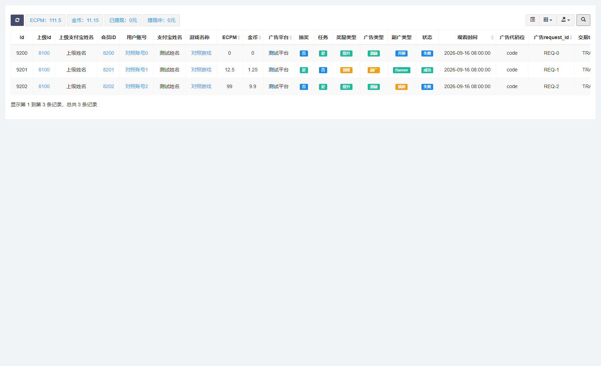
相同 12 个选项，首屏 10 个；核对下拉内容、尺寸和位置。
差异像素占比：0.0039%；平均 RGB 差异：0.00095
同一组生成数据，键盘翻页显示剩余 2 项。
差异像素占比：0.1107%；平均 RGB 差异：0.03926
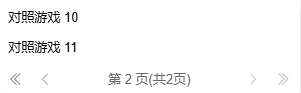
相同无匹配关键词，空结果弹层比较。
差异像素占比：0.0000%；平均 RGB 差异：0.00000
相同 12 个选项；按参考取整规则校正右侧展开位置。
差异像素占比：0.0020%；平均 RGB 差异：0.00034
同一组生成数据，末页 2 项。
差异像素占比：0.1500%；平均 RGB 差异：0.04437

相同无匹配关键词；局部截图，真实可见权限范围另行核验。
差异像素占比：0.0000%；平均 RGB 差异：0.00014

相同 3 条补贴记录和图片，折叠筛选；核对四个单元格搜索请求。审核操作、权限与后台汇总语义仍未完整验证。
差异像素占比：3.2656%；平均 RGB 差异：2.34601
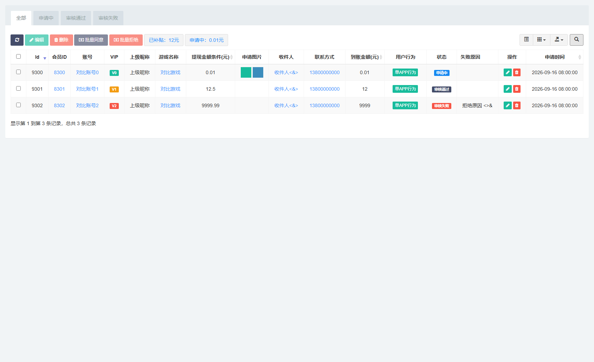
相同 12 个生成代理商，首屏 10 个；仅下拉层截图，不验证账号可见范围。
差异像素占比：0.0187%；平均 RGB 差异：0.01045
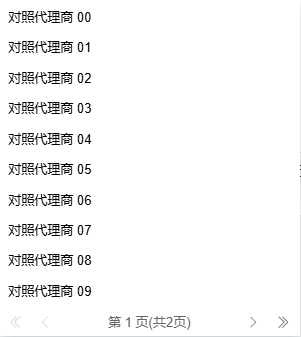
键盘翻到第 2 页，核对剩余两个选项与分页栏。
差异像素占比：0.1107%；平均 RGB 差异：0.03926
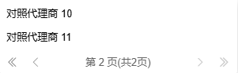
相同无匹配关键词，核对空结果面板。
差异像素占比：0.0000%；平均 RGB 差异：0.00000

相同 12 个生成选项，首屏 10 个；仅裁剪下拉层，截图像素尺寸受小数坐标取整影响。
差异像素占比：5.6202%；平均 RGB 差异：2.84482
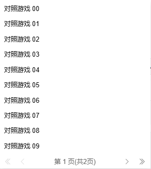
右方向键翻到第 2 页，剩余 2 个生成选项；验证分页内容与面板几何。
差异像素占比：5.4549%；平均 RGB 差异：2.39617

相同无匹配搜索词，仅比较空结果下拉层；不代表账号可见范围或服务端语义一致。
差异像素占比：3.4848%；平均 RGB 差异：1.85453
相同模拟 ID 和三个关系字段；对标仅打开和填入模拟值，不提交保存，不验证关系联动业务规则。
差异像素占比：0.4975%；平均 RGB 差异：0.28928
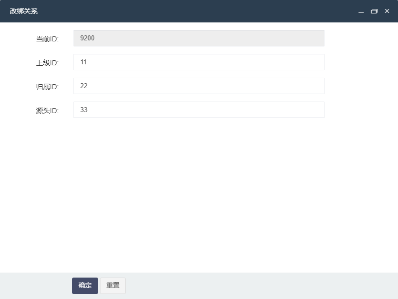
统一模拟数据，滚动至底部；核对页签随内容滚动和固定确认栏，不等同于完整基础表单验收。
差异像素占比：1.2379%；平均 RGB 差异：0.55455
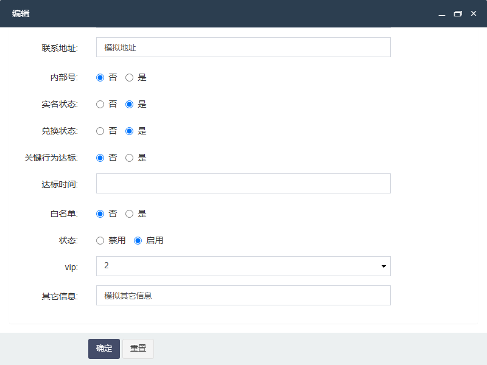
固定同一日期时间，比较时间面板内部，不验证弹层定位。
差异像素占比：0.9904%；平均 RGB 差异：0.67551
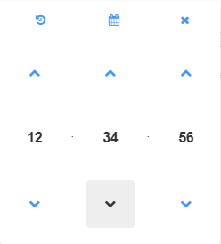
固定同一日期时间，比较小时网格。
差异像素占比：0.5120%；平均 RGB 差异：0.29869
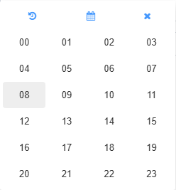
固定同一日期时间，比较分钟网格。
差异像素占比：0.5751%；平均 RGB 差异：0.33617
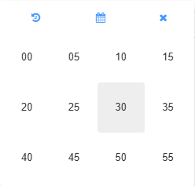
固定同一日期时间，比较秒网格。
差异像素占比：0.5751%；平均 RGB 差异：0.33617
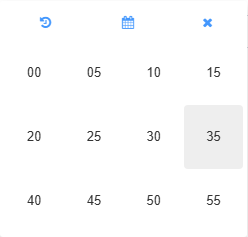
固定 2026-09-17 12:34:56，仅比较日期弹层裁剪；不代表弹层在表单中的定位或全部时间面板已验收。
差异像素占比：0.5320%；平均 RGB 差异：0.45166
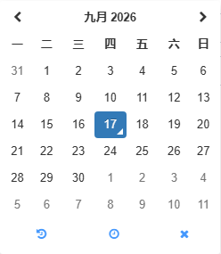
相同模拟身份字段，空头像、空密码，基础页签顶部截图；完整滚动表单和附件选择尚未验收。
差异像素占比：2.4025%；平均 RGB 差异：1.35506
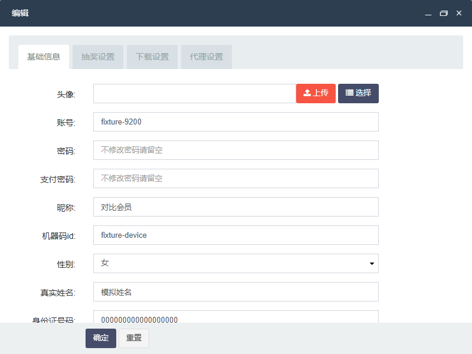
同一套模拟代理开关和四项比例；仅比较代理页签与窗口，不验证服务端分佣规则。
差异像素占比：0.5969%；平均 RGB 差异：0.11278
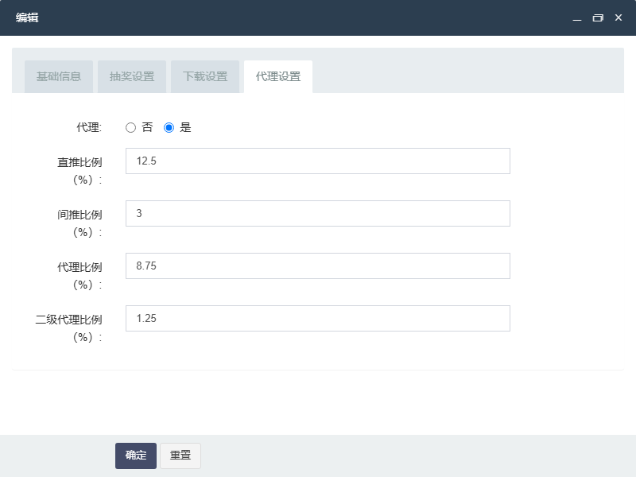
相同模拟下载地址；仅比较下载页签与窗口，不验证链接内容和下载安装行为。
差异像素占比：0.5956%；平均 RGB 差异：0.11097
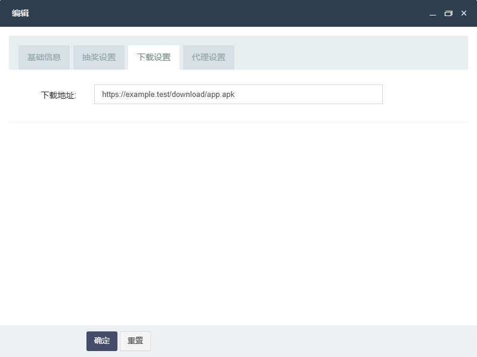
同一套模拟数据：12/7 次，倒计时 3.5～9 与 1.25～8.75。仅比较抽奖页签和弹窗，不向对标提交业务修改，不验证服务端抽奖规则。
差异像素占比：0.8123%；平均 RGB 差异：0.20050
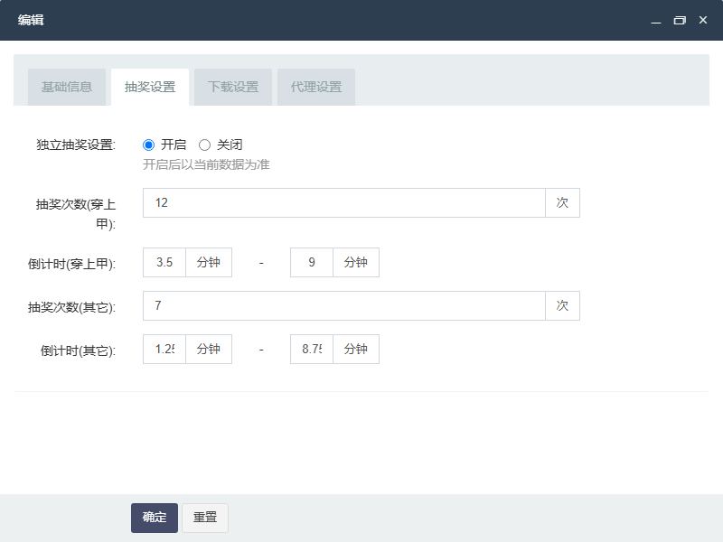
相同的可用金币 12.5、冻结金币 3，800×600 弹窗区域；对标仅打开和填入模拟值，未提交。
差异像素占比：0.4648%；平均 RGB 差异：0.28125
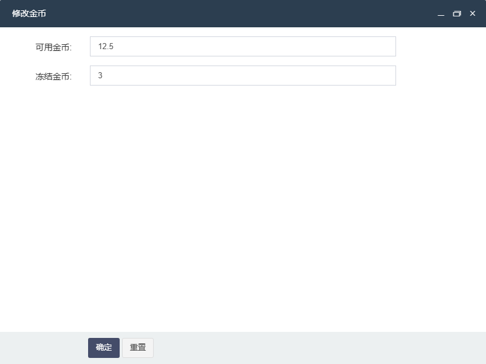
两端打开日历并设置同一段 2026 年 9 月日期范围；比较展开状态，未覆盖所有月份、快捷范围及屏幕尺寸。
差异像素占比：4.1966%；平均 RGB 差异：3.14282
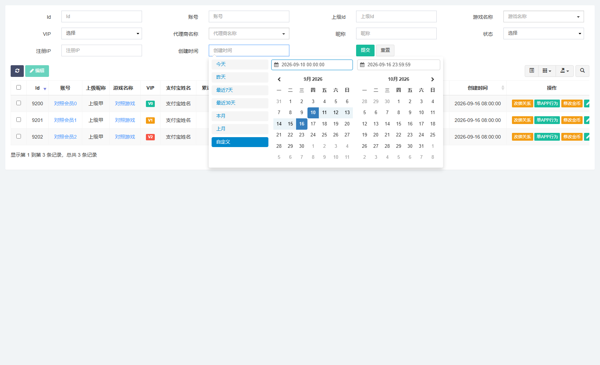
相同的 3 条会员记录，卡片模式；固定视口未展示全部下方记录。操作权限、筛选控件和工具栏仍有差异。
差异像素占比：3.4436%；平均 RGB 差异：3.09360
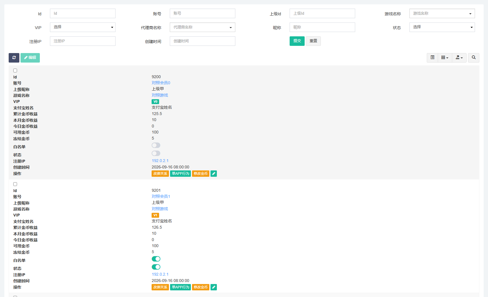
相同的 31 天趋势数据、新增与登录数量；仅比较内容区域。
差异像素占比：0.1091%；平均 RGB 差异：0.11194
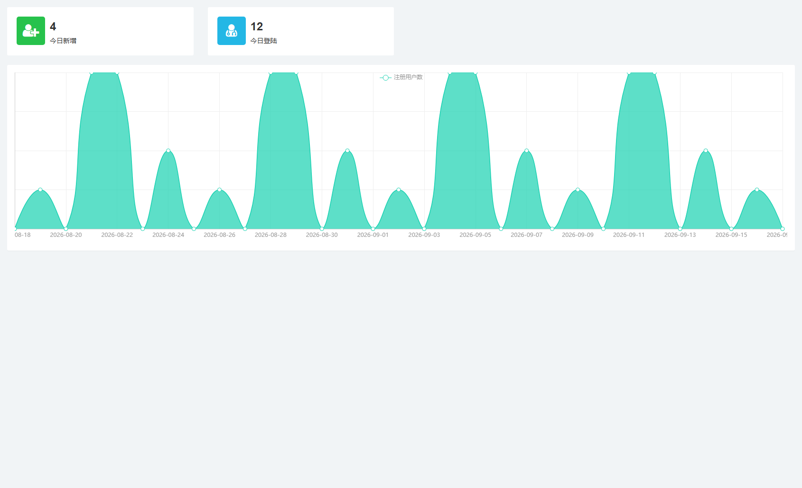
相同主体名称、31 天注册数据及今日数量；仅比较内容区域，目标页面和业务统计规则另行验收。
差异像素占比：0.3280%；平均 RGB 差异：0.30631
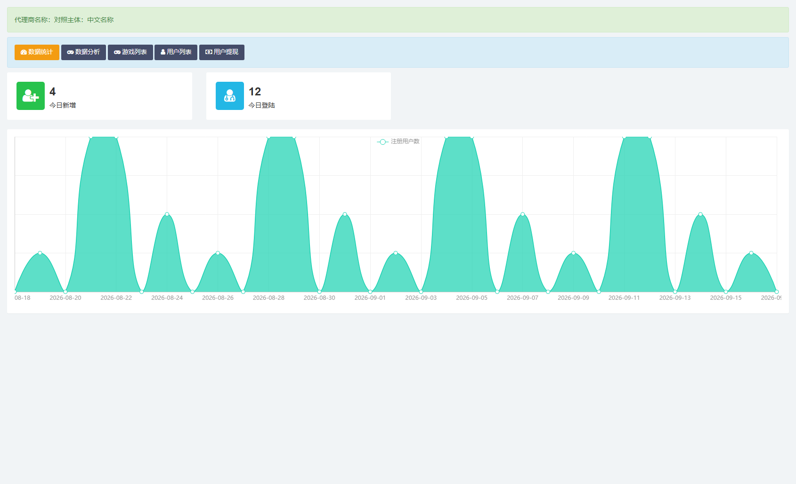
相同的 3 条记录：启用、禁用、上下级、中文长名称及特殊字符。权限按钮仍有差异。
差异像素占比：2.0859%；平均 RGB 差异：2.05819
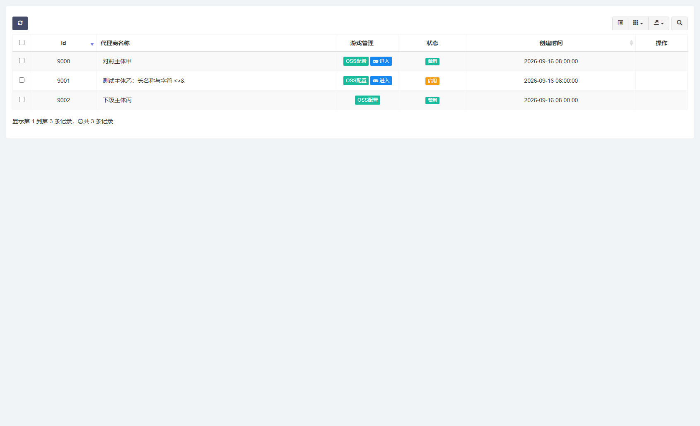
相同的空表单状态，1920×1080；未提交登录，不验证错误提示与认证规则。
差异像素占比：0.0000%；平均 RGB 差异：0.00000
相同的 3 条申请中、通过、失败记录；折叠筛选，包含金额边界值。操作权限、工具栏和列宽仍有差异。
差异像素占比：3.7939%；平均 RGB 差异：2.93816
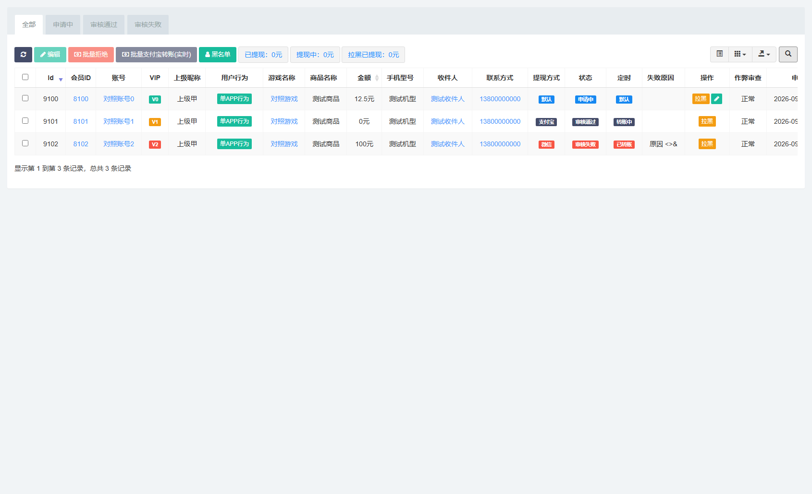
相同的 3 条会员记录；区分实名认证姓名与支付宝姓名。列顺序已核对，工具栏、权限操作和筛选控件仍有差异。
差异像素占比：2.9428%；平均 RGB 差异：2.41897
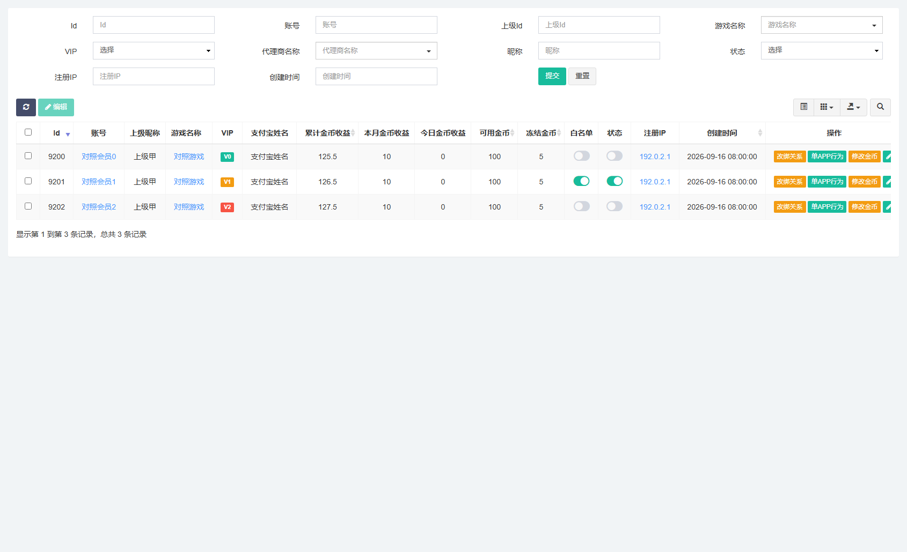